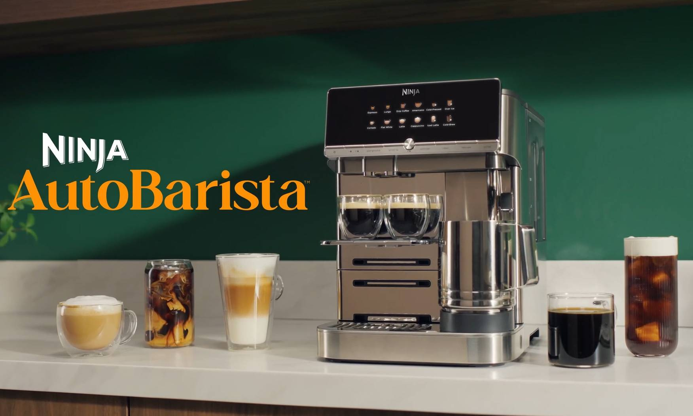

厨房智能硬件 / 竞品观察
咖啡制作交给自动程序，日常清洁仍是体验的一部分
从研磨、计量到奶泡，一台设备接手更多步骤，也需要让用户看懂维护工作。

TechCrunch于11月8日发布AutoBarista评测，提示关注清洁负担。
品牌官网显示，AutoBarista Pro提供13种预设饮品，能够自动调整研磨并按重量计量，支持奶泡设置和个人偏好保存。页面同时列出自动冲洗、可拆冲煮组件、滴水盘与粉渣盒等清洁设计；其中部分组件适合洗碗机，部分需要手洗。参数与保养要求应按具体型号核对，不能把Pro版本的菜单数量套用到基础款。
TechCrunch｜使用评测 · 2026-11-08 07:00 PST（北京时间23:00）SharkNinja｜AutoBarista Pro产品页 · 2026-11-09查阅近24小时新评测；产品功能据官网核对，不表述为今日新品发布。